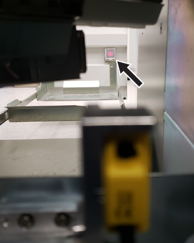
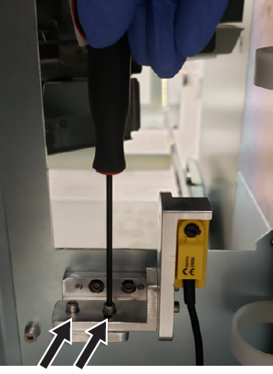
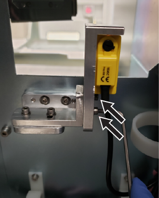
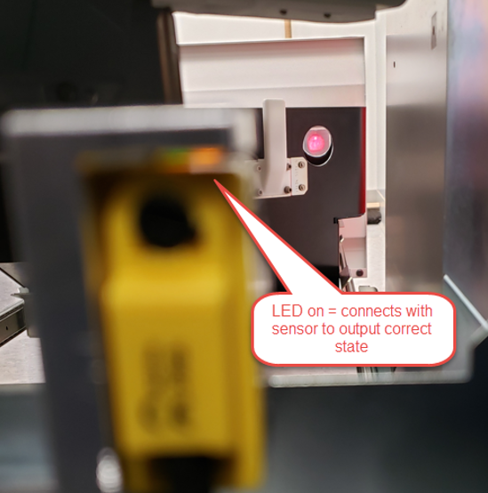

This topic includes information about how to adjust the solid waste bag sensor.
Safety Reminder
Servicing the DxI 9000 instrument involves potential risks for pinch and puncture, electrical shock, and exposure to hazardous materials. You must mitigate these risks by taking appropriate countermeasures. See
Safety for more information.
Prerequisites
Before you begin an alignment procedure:
If you must make changes to the instrument's hardware, you must complete those changes before you prepare the instrument for adjustments and alignments.
You must verify that alignments have previously been completed on the instrument. To verify, in the Machine Control App go to
Menu > Prototype Alignment to open the Prototype Alignment page and to verify the
Finalize Instrument Alignments button is
GRAY in color. If the button is
BLUE in color, do not complete this procedure. Instead, you must first complete manual alignments.
You must first initialize the instrument to a
GREEN (Ready) status to ensure all subsystems have been successfully initialized and homed. You must then enter the instrument into a
BLUE (Maintenance) status.
Note: Systems with serial number prior to 300116 were manufactured with a fixed (non-adjustable) bracket for the solid waste bag sensor. In order to adjust the sensor position, the bracket must be replaced with the newer adjustable style bracket. See
Replacing the Solid Waste Bag Sensor Bracket for details on replacing the bracket.
Note: If the instrument enters into a
RED (Stopped) status:
Verify the interlock switch is in the correct position.
Be sure you are signed in to use the BeckmanAdmin account.
In the Console App go to
Menu > Tools > Diagnostics > Intrusive Diagnostics and select
Start Session.
Complete all troubleshooting, adjustments, manual alignments, and maintenance necessary to be able to initialize the instrument to a
GREEN (Ready) status.
Select the
SYSTEM RUNNING button and go to
Stop > Pause to enter the instrument into a
YELLOW (Paused) status.
Adjusting the Solid Waste Bag Sensor
In the Console App go to
Menu > Tools > Diagnostics > Intrusive Diagnostics and select
Start Session.
From the front of the instrument, pull open the solid waste drawer and remove the bin.
Facing the rear of the instrument, open the lower right door to gain access to the fluidics panel containing syringe pumps for reagent pipettors 1 and 2.
Remove the screws on the fluidics panel using a 3mm driver. Swing the fluidics panel open to gain access inside the instrument wehre the waste bin sensor is located.
Adjust the sensor so that the red beam "dot" is centered on the middle of the reflector of the waste bin drawer.
Note: The system must be powered on to perform this adjustment. Ensuring the waste drawer is pulled all the way out will produce a more precise alignment.
Figure 418: Solid Waste Bag Sensor Beam Centered on Reflector

Adjust the horizontal rotation by loosening the top screws using a 2.5mm driver.
Figure 419: Horizontal Rotation Adjustment Screws

Adjust the vertical rotation by loosening the screws on the right side using a 2.5mm driver.
Note: A 90deg hex wrench (L-shaped) will allow adjustment while the sensor is still mounted to the bracket within the instrument.
Figure 420: Vertical Rotation Adjustment Screws

Tighten all the adjustment screws and confirm the position fo the sensor has not changed in reference to the reflector.
Verifying Sensor Operation
In the Console App go to
Menu > Tools > Diagnostics > Intrusive Diagnostics and select
Start Session.
In the Machine Control App go to
Menu > Machine Control > GeneralSolidWaste > GeneralSolidWaste.Assembly > GeneralSolidWaste.BagDetectSensor.
On the Action tab select
GetState.
Select
Execute. To confirm that the sensor beam connects with the reflector,
state should remain clear.
Note: The two LED lights will illuminate when the sensor connects with the reflector, and
state should be clear.

Place a waste bag into the bin.
Select
Execute. To confirm that the sensor beam no longer connects with the reflector, because the waste bag breaks the connection,
state should now appear selected.